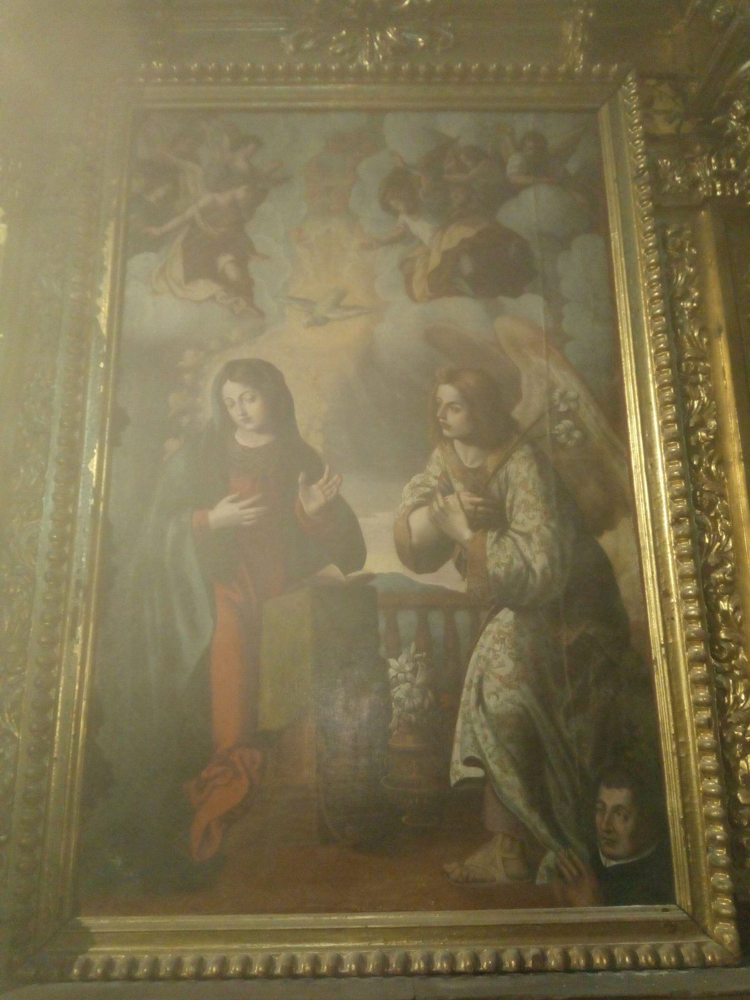

Retablo de la Encarnación

Es un retablo de un solo cuerpo sobre la mesa del altar, realizado hacia 1706, como indica su inscripción. Lo preside un gran lienzo de la Anunciación: el ángel Gabriel anuncia a María que será la Madre de Dios, mientras el Espíritu Santo, en forma de paloma, desciende entre ángeles. En la esquina inferior derecha asoma el donante que costeó la obra, en actitud de oración. Columnas salomónicas decoradas con parras y racimos, símbolo de la Eucaristía, enmarcan la pintura. Probablemente no estaba aquí en origen, sino en una capilla del lado contrario.
Retablo del Cristo atado a la columna
Es una obra barroca del último tercio del siglo XVII, con un solo cuerpo, banco, cuatro columnas salomónicas decoradas con vides y un ático semicircular. Lo preside una imagen moderna de Cristo atado a la columna. Las pinturas, de la época del retablo, representan a San Antonio de Padua, a San Vicente Ferrer predicando —por la tradición que sitúa al santo predicando en Pinto— y, en el ático, la Virgen entregando el rosario a Santo Domingo de Guzmán. Su iconografía se relaciona con la Cofradía de Nuestra Señora del Rosario, fundada en 1609.
Retablo de la Virgen de los Dolores
Parece obra del siglo XVII, con diversas intervenciones posteriores. Lo preside una imagen de vestir de la Virgen de los Dolores, de hacia 1815, con corona, el corazón atravesado por siete espadas y rosario. Sus pinturas sobre tabla, anteriores al propio retablo, representan a San Juan Bautista y San Bernardino de Siena en los laterales y, en el ático, a San Martín partiendo su capa con un pobre.